(Lifeboat crews only)
Orange Basket
Use of the Orange Basket stretcher
• Optimal stretcher for extracting a casualty with a suspected spinal
injury.
• Can be carried from the sides or from either end.
• The Neil Robertson stretcher and Ambulance Pouch can be fitted
inside if further transportation is required.
Safety
• Ensure the straps are secure before lifting:
MAKE SURE CASUALTY CAN BREATHE.
• CANNOT be airlifted by HELO if airlift is required.
• REMEMBER: TALK to the casualty and explain what you’re doing.
Lay the OB beside casualty, ensure the straps are secured in the elastic loops. Log roll the casualty, holding their head at all times. Place the stretcher as close to the casualty’s back as possible with their head 2-3 inches from top of the stretcher. Scoop the casualty into the stretcher and lower to the floor.
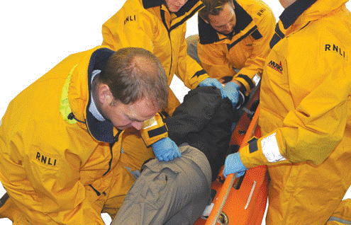
Lift the casualty’s feet into the stretcher.
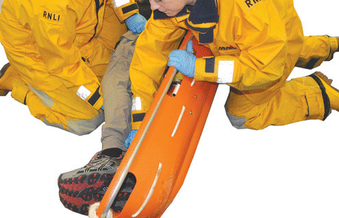
Scoop the casualty into the stretcher and lower to the floor.
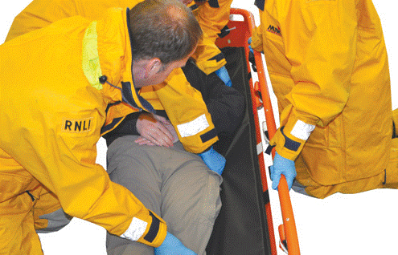
Slide the casualty into the stretcher. Several controlled moves may need to be made.
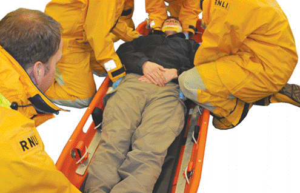
Secure the colour coded straps. Consider injuries, may need diagonal strapping and or padding. Top black strap should be under casualty’s armpits. Use a figure of 8 to secure feet. Tighten all the straps by feeding through.
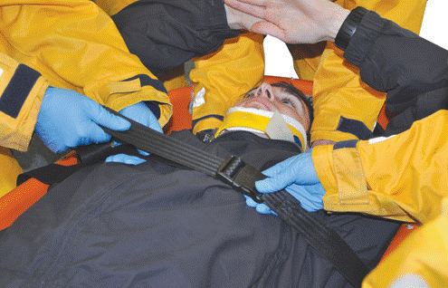
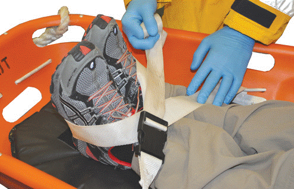
6
Secure the casualty’s head with the head blocks, both blocks should be put in at same time. Immobilise the head at all times.
7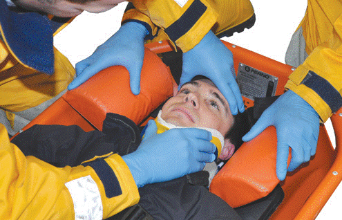
Secure the head using the black strap (photo 8). If this is not possible then velcro and rolled blankets can be used.
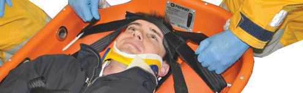
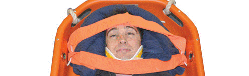
Lift the stretcher from the sides or from the ends.
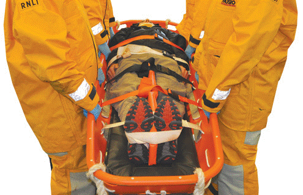
The stretcher can be lifted using a Lifting Bridle. Ensure the carabiners go through the metal eyes. The straps then attach to the central carabiner.
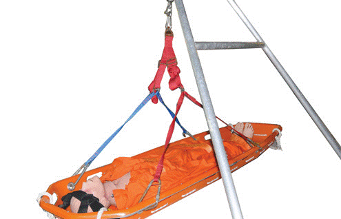